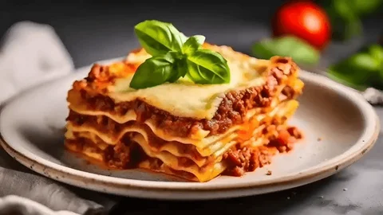

Home
Lasagna

Description
This classic lasagna recipe layers rich meat sauce, creamy béchamel, and
perfectly cooked pasta sheets to create a comforting Italian dish. It’s
hearty, cheesy, and baked to golden perfection.
Perfect for family dinners or special occasions, this lasagna is both
satisfying and flavorful. You can prepare it in advance and reheat it,
making it a great choice for meal planning too.
Ingredients
- 500g ground beef
- 1 onion, chopped
- 2 cloves garlic, minced
- 400g canned tomato sauce
- 2 tablespoons tomato paste
- 200g lasagna noodles
- 250g ricotta cheese
- 200g shredded mozzarella
- 50g grated parmesan
- 2 tablespoons olive oil
- Salt and pepper to taste
- Fresh basil or oregano (optional)
Steps
- Preheat the oven to 180°C (350°F).
-
Heat olive oil in a pan, add chopped onion and garlic, and sauté until
soft.
-
Add ground beef, cook until browned, then stir in tomato sauce and
tomato paste. Let simmer for 15 minutes. Season with salt and pepper.
-
Cook the lasagna noodles according to the package instructions. Drain
and set aside.
-
In a baking dish, start layering: begin with meat sauce, then noodles,
ricotta cheese, and mozzarella. Repeat layers and finish with parmesan
on top.
-
Cover with foil and bake for 25 minutes. Remove foil and bake for
another 15 minutes until the top is golden and bubbling.
-
Let it rest for 10 minutes before serving. Garnish with fresh basil if
desired.